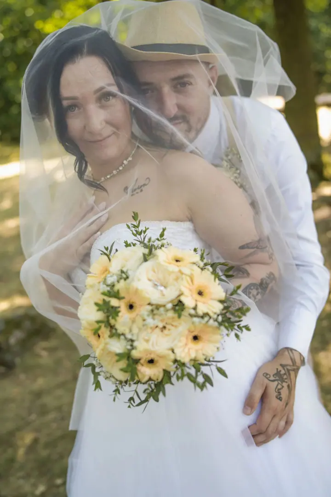
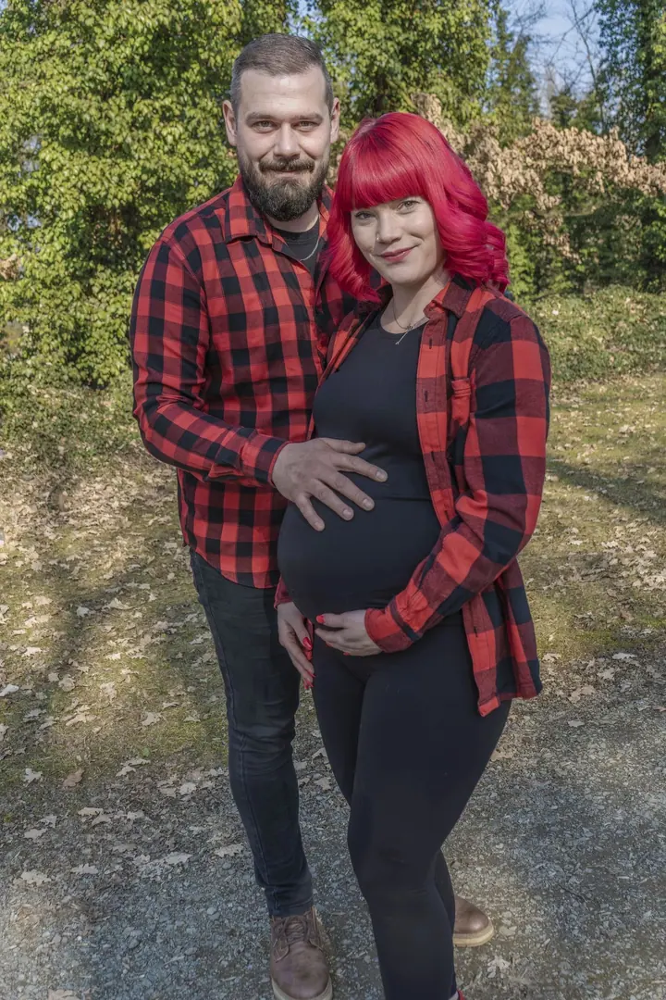
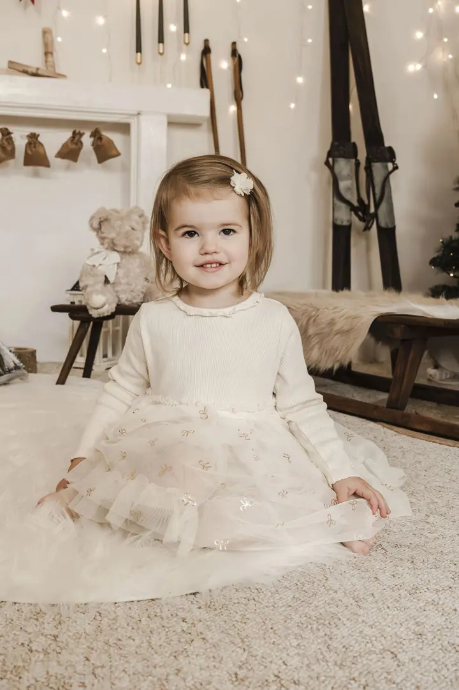
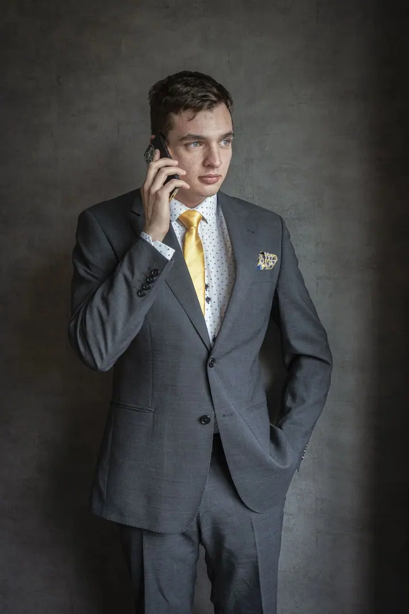
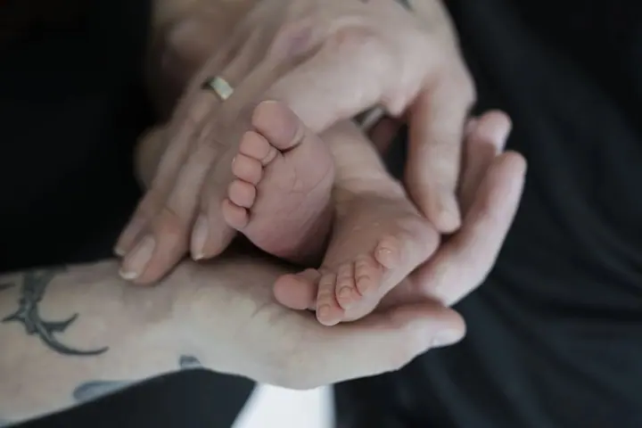

Svatby
Fotím první pohled, slzy dojetí, radostné úsměvy i večerní oslavu. Balíčky začínají na 4 hodinách a jdou až po celodenní focení. Součástí je i svatební video.





Jmenuji se Michaela Mudrová a jsem fotografka, která ráda tvoří vaše příběhy. Fotím svatby, budoucí rodiče i ty nejmenší. Chci, aby vaše vzpomínky zůstaly živé a plné opravdových momentů.
Více o mně„Ahoj, jsem fotografka, která ráda tvoří vaše příběhy.“
— Michaela Mudrová
Fotím první pohled, slzy dojetí, radostné úsměvy i večerní oslavu. Balíčky začínají na 4 hodinách a jdou až po celodenní focení. Součástí je i svatební video.
Fotím ženské, mužské i business portréty, v ateliéru i venku. Na fotkách máte vypadat jako vy.
Klidné focení v době, kdy čekáte miminko, samotné maminky nebo obou rodičů, třeba venku v přírodě.
Jemné fotky miminka v prvních dnech. Drobné ručičky a nožičky, které tak rychle vyrostou.
Ahoj, jsem Michaela. Nejvíc mě baví svatby, protože se během jednoho dne stihne tolik emocí: první pohled, slzy dojetí, smích i večerní oslava. Snažím se to všechno zachytit tak, abyste se k těm chvílím mohli vracet celý život.
Kromě svateb fotím těhotenské focení, novorozence, děti a rodiny. Fotím taky ženské, mužské a business portréty. Ke každému focení přistupuji individuálně a hotové fotky dostanete v online galerii.
Ke svatebním balíčkům nabízím i video. Před Vánoci připravuji vánoční focení, ze kterého jsou pěkné dárky pro babičky a dědečky.
Napište mi nebo zavolejte. Ověřím, jestli mám váš termín volný, a pošlu vám všechny informace.
Společně najdeme rozsah, který sedí vašemu dni, od 4 hodin focení až po celý den.
Jsem s vámi, nenápadně a v klidu. Zachytím emoce, slzy i radost tak, jak opravdu byly.
Vybrané a upravené fotky vám pošlu v online galerii, kde si je můžete prohlížet i sdílet s blízkými.
Svatební balíčky pro rok 2027 vycházejí od 11 900 Kč do 25 900 Kč, podle toho, jak dlouho budu s vámi. Součástí je i svatební video.
Čím dřív, tím líp. Oblíbené svatební termíny se rezervují i víc než rok dopředu. Rezervace na rok 2027 už přijímám.
Portréty, těhotenské, newborn nebo rodinné focení začínají od 2 500 Kč. Vánoční focení je od 1 750 Kč.
Fotky vám předám v online galerii, odkud si je jednoduše stáhnete.